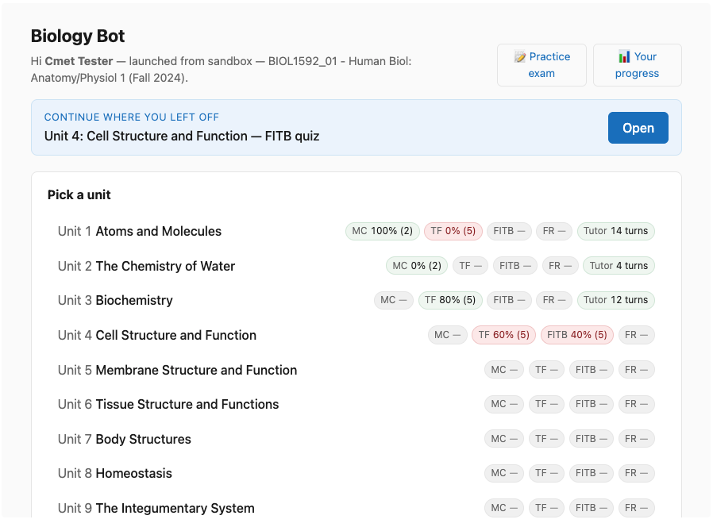
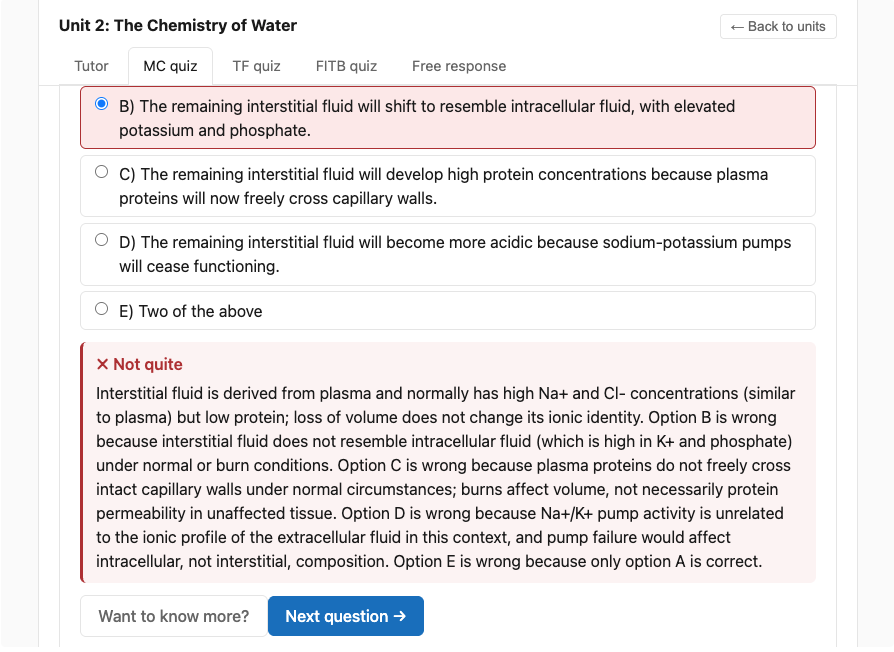
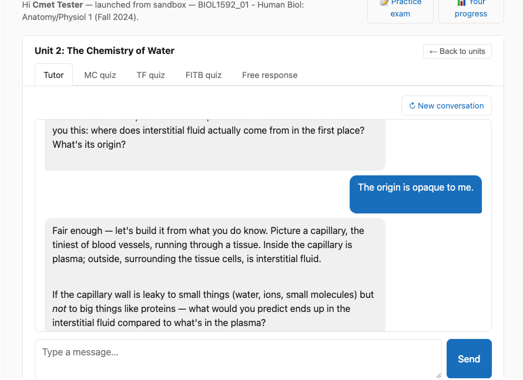
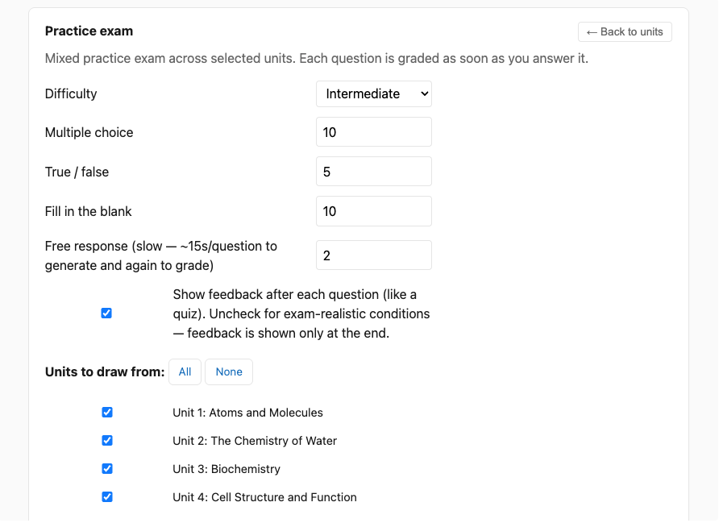
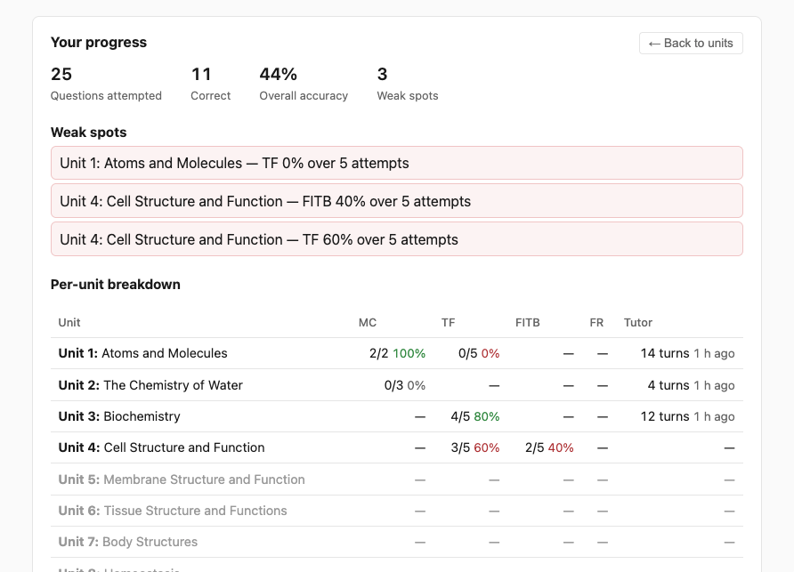
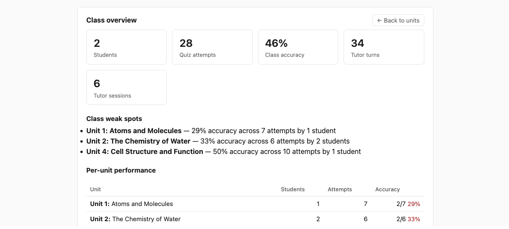
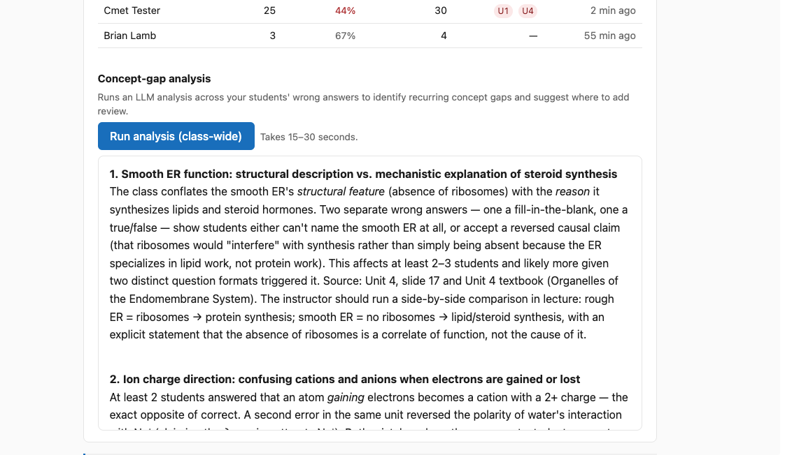

At a glance
For students 👩🎓
Getting in
- Open your Moodle course in the usual way.
- Click the Study Companion activity wherever your instructor has placed it. It opens inside Moodle. Click ⛶ Full screen in the header if you want more room, then ↩ Back to course to return to Moodle.
- You'll see a list of all 17 units. Click a unit to start a tutor conversation, or click one of its MC / TF / FITB / FR badges to go straight to that type of practice question.

The practice question bank
Each unit has four practice tabs: MC (multiple choice), TF (true/false), FITB (fill in the blank) and FR (free response). Every tab has a fixed set of questions written ahead of time and fact-checked against your instructor's lecture slides and textbook chapter.
- Pick a level. Use the Basic / Advanced toggle. Each level has 30 MC, 30 TF, 30 FITB and 10 free-response questions per unit.
- Pick a question from the grid. Tiles are numbered and colour-coded: green ✓ means answered correctly, amber means attempted but not yet right, and plain means not tried yet.
- Answer it and see the answer key right away. For MC you'll see why each wrong option was tempting. For FITB, close spellings, plurals and hyphen variants are accepted. For FR, an AI grades your answer against a rubric (half-marks are possible) and shows what you got, what was missing, and a model answer.
- Come back any time. If you reopen a question you've answered, it shows your last attempt and its marking, with a Try again button.
- 💬 Discuss with tutor
- After any answer, right or wrong, click Discuss with tutor. The tutor gets the question, your answer and (for FR) the full marking, and you start the conversation with your own question. If you think the grading was wrong, say so: the tutor is told to admit it when you have a fair point.
- 👍 Rate the question
- After answering, you can give the question a 👍 or 👎. If you choose 👎, pick a reason (answer looks wrong, confusing wording, not covered in our course, or just found it hard) and add a note if you like. Ratings go to your instructor anonymously. Click the thumb again to take a rating back.
- 🔍 Want to know more?
- Gives a fuller plain-English walkthrough of the question, with references to the relevant lecture or textbook section.

The tutor
A Socratic chat. The tutor asks you questions instead of lecturing, to find out what you already understand and build from there. It sticks to your course's slides, terms and textbook. Click ↻ New conversation any time to clear the context and start over.

Practice exam mode
- Click 📝 Practice exam in the header.
- Choose how many of each question type you want, a difficulty, and which units to draw from. Practice exam questions are generated new each time, so you won't see the same exam twice.
- Then choose one of two options:
- Generate exam (online): take it in the browser. Turn feedback off to simulate real exam conditions. At the end you get a pattern synthesis: what you're solid on, what to revisit, and suggested next steps.
- 📄 Generate printable: a print-friendly page you can save as a PDF, with or without the answer key.

Tracking your progress
Click 📊 Your progress in the header to see your overall accuracy, the units you're weakest on, and a breakdown by unit and question type. The colour-coded tiles in each question bank show where you are within that unit at a glance.

For instructors 👩🏫
Adding the Study Companion to a course
- Check that the tool is registered with your Moodle. It is already registered on TRU's production Moodle and the sandbox. If it isn't in Add an activity or resource on another Moodle site, an admin needs to register it once for the whole site using dynamic registration with the URL
https://moodle-biology-bot-production.up.railway.app/register. - If the tool is registered but doesn't show up in the activity chooser, an admin needs to edit it under Site administration → Plugins → External tool → Manage tools and set Tool configuration usage to "Show in activity chooser and as a preconfigured tool".
- In your course, turn editing on, then choose Add an activity or resource and pick the tool. Save.
- That's it. Enrolled students can now use it. When you launch it as an instructor, you also get a 👩🏫 Instructor view button.
The instructor view
Anyone with the Instructor, Administrator or Teaching Assistant role in the course sees the 👩🏫 Instructor view button. It contains:
Class totals, weak spots and per-unit performance
Summary cards (students, quiz attempts, class accuracy, tutor activity), then the units where the class as a whole is under 70% accuracy, then a table showing which units are easy, hard, or not being used.

Roster and concept-gap analysis
The roster has one row per student, and you can click a student to see their full progress. Run analysis (class-wide) has the AI read wrong answers from across the class and summarize the concept gaps that keep coming up, with lecture references and suggested teaching actions. It is most useful once students have built up some activity.

Question quality report
Nobody has time to read all 3,400 bank questions before term starts, so students point out the bad ones as they go. The report ranks the questions most worth your review. A 👎 from a student who got the question right counts double, because that usually points to a real problem with the question rather than frustration. "Just found it hard" counts for very little, so a question that is merely difficult won't send you looking for a fault. Ratings are aggregated and anonymous. Each flagged question shows its answer key so you can judge it on the spot, and you can download everything as a CSV at the end of term.
Exam builder
Pick units, how many of each question type, and a difficulty. The tool generates new questions, never taken from the student practice bank, so students won't have seen them. Each one comes with its full answer key: the correct MC option, TF/FITB answers with accepted synonyms, and the rubric and model answer for free-response questions. Remove any you don't want, then export:
- Moodle XML: import it through Question bank → Import (multichoice, true/false, short answer, and essay with the rubric in the grader info).
- Word (.docx): an exam paper with a name line, then the answer key on separate pages.
What the Study Companion knows about 📚
The tutor, the questions and the grading are all grounded in the instructor's actual course materials, not the AI model's general knowledge of biology:
| Source | How it's used |
|---|---|
| Instructor study guides Per-unit |
Weighted most heavily in question generation (about three quarters of questions), so practice matches what the instructor stresses. |
| Lecture PPTs 17 unit decks, slides + speaker notes |
Main source for the tutor, question generation and fact-checking. Students are pointed to the relevant lecture topic. |
| Course terms list Per-unit key terms |
The basis for fill-in-the-blank questions and the vocabulary the tutor expects in each unit. |
| Example exam Worked exam with answer key |
A style guide, so generated questions match the instructor's voice and level of difficulty. |
| Open textbooks TRU Pressbooks A&P I & II, CC BY 4.0 |
The matching chapter for each unit, cited when students are pointed to the textbook. |
How the question bank is checked
Every bank question went through an automated accuracy check before release. A stronger AI model compared each question with the unit's lecture and textbook material and flagged factual errors, answers that contradict the course, and MC questions with two defensible answers. Flagged questions were regenerated and checked again. All 3,400 passed. The bank build also checks for balance: correct MC answers are spread evenly across A–E, and true/false sets aren't lopsided. Student ratings (above) are the last line of defence.
Behind the scenes
The Study Companion is an LTI 1.3 tool, the same standard Moodle uses to embed other external activities. It is built in TypeScript on Node, uses Postgres for student, session and progress data, and runs on Railway. The AI is Anthropic Claude: the question bank was written and checked by a top-tier model ahead of time, and the live tutoring, grading and feedback run on a faster, cheaper model to keep costs reasonable for a class-sized pilot. Answer keys stay on the server, and grading happens there too. Source on GitHub: github.com/blamb/moodle-biology-bot.
Built by Brian Lamb at Thompson Rivers University, in collaboration with the BIOL 1592 / 1692 instructor, whose testing and feedback have shaped the tool throughout. Borrows prompt patterns from the earlier open-margins project. Grounding includes the open A&P I and A&P II Pressbooks textbooks (Thompson Rivers University, CC BY 4.0).
Recent changes
Development history since the first working version in May 2026, newest first.
- October 2026New name. "Biology Bot" is now the Human Anatomy Study Companion.
- August 2026Student question ratings and an instructor quality report. Students can give 👍/👎 on any bank question, and the instructor sees a ranked list of the questions most worth reviewing.
- August 2026Instructor exam builder. Generates new exam questions with full answer keys and exports them as Moodle XML or Word.
- August 2026Full screen and Back to course buttons, plus a fix that makes full-screen mode work in Firefox.
- August 2026Changes from instructor testing. Students now lead the tutor handoff, answered questions keep their results when reopened, correct answers are spread evenly across MC positions, and answer keys are never sent to the browser.
- July 2026The question bank. Students now work through a fixed, pre-checked bank instead of questions generated on the spot.
- June–July 2026Fairer free-response grading. Half-marks, credit for answers that are correct but worded differently, and rubrics that only score what the question actually asks.